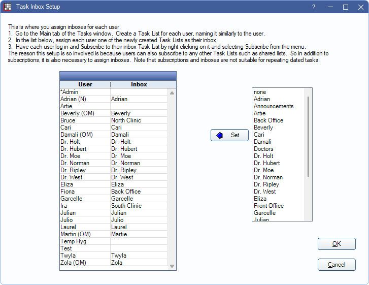

Task List and Inbox
Task lists are a way to organize tasks and reminders.
In the Tasks area, in the Main tab, click Add Task List.

- Alternatively, open a task list and click Add Task List to create a sub-task list within a main task list.
- To edit an existing task list, right-click the list and select Edit Properties.
A task list can have nested task lists or tasks within it, much like the folder/file concept. A user's inbox is also considered a task list.
- Description: Enter the task list name.
- Object Type: Select whether to attach patients or appointments to tasks in this list.
- Patient: Task lists with this type selected will be listed automatically when users select Tasks from the Main Toolbar. This should be selected when setting up an inbox.
- Appointment: Task lists with this type will be listed automatically when users click To Task List in the Edit Appointment window.
- Global Filter Override: Only available when Global Filter for Task Lists is enabled.
- Default: This task list will automatically use the filtering option selected in Tasks Preferences.
- None: This task list will not automatically filter. This overrides the selection set in Task Preferences.
- Clinic: This task list will automatically filter by the selected clinic. This overrides the selection set in Task Preferences.
- Region: This task list will automatically filter by region. This overrides the selection set in Task Preferences.
The following options are only visible when Repeating Task Lists (Legacy) are enabled.
- Date: Leave blank except to show all tasks added to this list on a dated list.
- Date Type: Normally set to none.
- Is From Repeating: Normally leave unchecked.
Set up a User Inbox
A User Inbox is a task list that contains tasks sent directly to a specific user when a user clicks Send To or Reply.
For each inbox, create a task list for the user and select Patient as the task list's Object Type.
In the Main Menu, click Setup, Tasks, Inbox Setup.

Current users appear on the left. All existing task lists appear on the right. To add or edit users, see User Edit.
To set an inbox, highlight the user on the left, then the associated task list on the right, and click Set.
Have each user log in and subscribe to their inbox. See Tasks Area for details on finding and subscribing to a list.